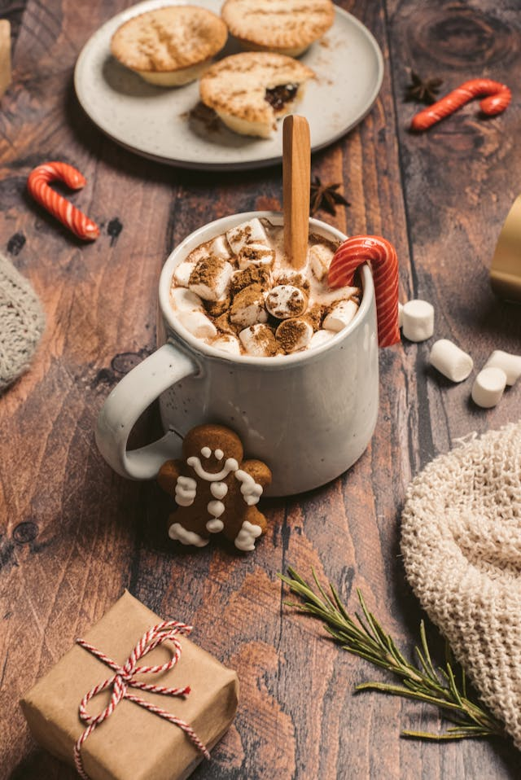

We've curated a collection of three simple and delicious hot drink recipes to warm your heart and soothe your soul.
Whether you're craving the rich flavors of a classic Hot Chocolate, the comforting spices of a Chai Latte, or the smooth, earthy taste of a Matcha Latte, you'll find easy-to-follow recipes that bring these cozy beverages to life.
Perfect for any time of day, these drinks are designed to be quick, comforting, and full of flavor. Let's sip and enjoy!
